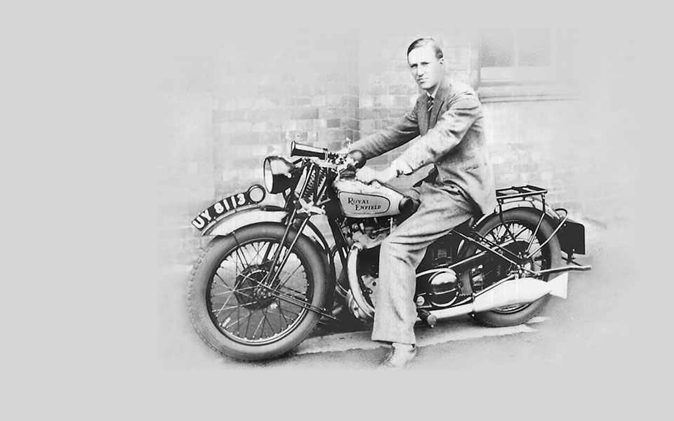

The decade begins with a diverse eleven model range, from the 225cc 2-stroke Model A to the 976cc V-twin Model K. New 350 and 500cc side-valve and overhead valve machines with dry-sump lubrication are also produced.
The legendary "Bullet" motorcycle is born. It is first displayed in November 1932 at the Olympia Motorcycle Show in London. Three versions are produced: 250, 350 and 500cc, all with inclined 'sloper' engines, twin-ported cylinder heads, foot operated gear change and high compression pistons.
Founding partner and joint Managing Director, Bob Walker Smith, passes away. His son, Major Frank Smith. who had been joint Managing Director with his father for a number of years, assumes full control of The Enfield Cycle Company.